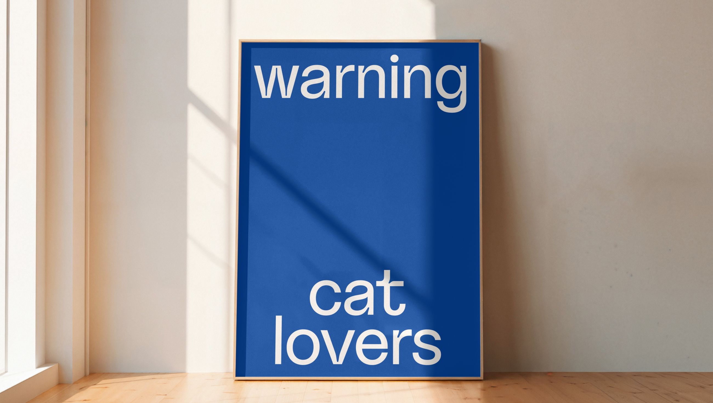
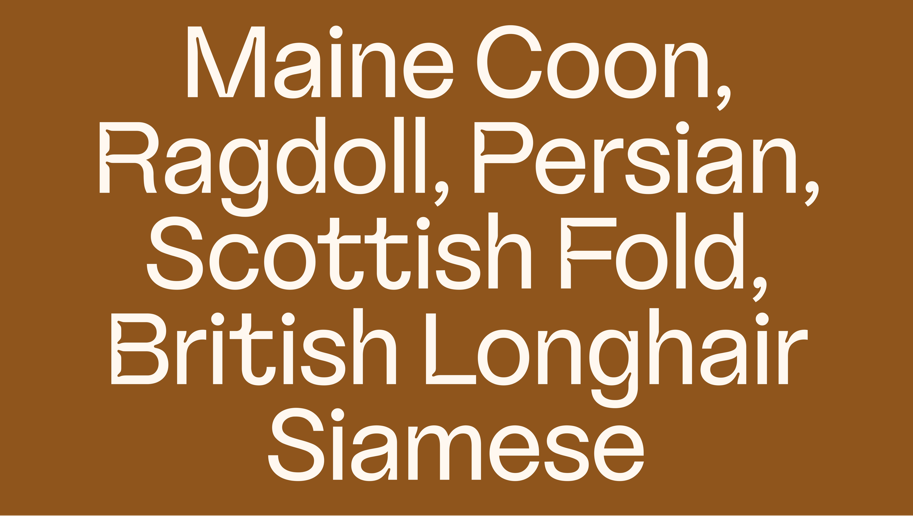

Inari Type
Information
Article
Viva!Verde
Viva!Verde is a brand specialized in creating solutions that prioritize the health and welfare of felines. They work in synergy between what's best for the cat, convenient for the caregiver, and beneficial for the planet. Viva!Verde creates solutions that reach this intersection, guided by constant innovation and using technology inspired by the wisdom of nature. With high standards of quality and performance, they always seek to satisfy their most demanding audience: cats. Viva!Verde is the first genuinely cat-centric brand.
For their visual identity, we've designed a typeface that incorporates playful felines subtly hidden within the curves of each letter. This typeface is available in three unique weights, its ink traps were designed to mimic the elegant lines of cats. This results in a visual identity that embodies the spirit of a cat-centric company.
Typography:
Caio Kondo
Graphic Design Studio:
Tall,Piet
2022
Services:
Logotype & Typeface

